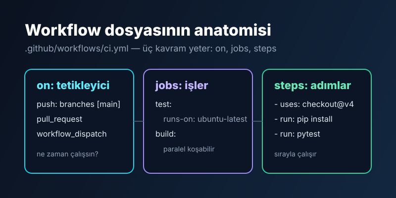
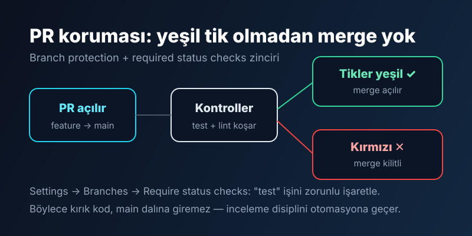

Her push'tan sonra elle test koşturan, zip'i elle yükleyen, "acaba çalışır mı" diye deploy eden geliştirici, en yakında bir hatayı üretimde keşfeder. Bu döngünün çözümü on yıl önce kurumsal ekiplerin lüksüydü; bugün GitHub hesabı olan herkes için birkaç satır YAML uzağında.
Bu rehberde GitHub Actions'ı sıfırdan kuruyoruz: ilk workflow'unu 10 dakikada çalıştıracaksın, tetikleyicileri, çok sürümlü testi, önbellekle hızlandırmayı, anahtarları güvende tutmayı ve kırık kodun main dalına girmesini engelleyen korumayı öğreneceksin. Git'e henüz hakim değilsen Git ve GitHub başlangıç rehberimizle başlaman iyi olur; buradaki örnekler Python projesi üzerinden gider ama aynı iskelet Node, Go ve statik siteler için de geçerlidir.
CI/CD ve Actions'ın parçaları
CI (sürekli entegrasyon), her değişiklikte kodun otomatik derlenip test edilmesidir; CD (sürekli dağıtım), testleri geçen kodun otomatik yayına alınmasıdır. GitHub Actions bu iki işi, repoda yaptığın her olaya bağlı olarak sanal makinelerde ("runner") koşan iş tanımlarıyla yapar. Beş kavram bütün sistemi taşır:
| Kavram | Nedir | Örnek |
|---|---|---|
| Workflow | Bütün tanım; .github/workflows/ altındaki YAML dosyası | ci.yml |
| Event (on) | Workflow'u tetikleyen olay | push, pull_request |
| Job | Bağımsız koşan iş birimi; ayrı sanal makine | test, build |
| Step | Job içindeki sıralı adım | run: pytest |
| Runner | Job'ı koşan makine | ubuntu-latest |
İşlerin tamamı bu hiyerarşiden ibarettir. Bir dosya yazarsın, GitHub olayı yakalar, uygun runner'da adımları sırayla koşar; adımlardan biri başarısız olursa job kırmızı biter.
İlk workflow'unu 10 dakikada kur
Örnek senaryo: testleri pytest ile koşan, lint'i ruff ile denetleyen klasik bir Python projesi. Repoda şu dosyayı oluştur:
# .github/workflows/ci.yml
name: CI
on:
push:
branches: [main]
pull_request:
jobs:
test:
runs-on: ubuntu-latest
steps:
- uses: actions/checkout@v4
- uses: actions/setup-python@v5
with:
python-version: "3.12"
- name: Bağımlılıkları kur
run: pip install -r requirements.txt
- name: Lint (ruff)
run: ruff check .
- name: Testler (pytest)
run: pytest -qBu dosyayı commit edip main'e pushladığında zincir çalışmaya başlar. Repodaki Actions sekmesinde job'ı canlı izleyebilirsin; her step'in çıktısı satır satır görünür. Buradaki dört adımın anlamı basittir: kodu runner'a indir, Python'u kur, bağımlılıkları yükle, denetle. uses: satırları hazır topluluk aksiyonlarını, run: satırları kabuk komutlarını çalıştırır.

Tetikleyiciler: ne zaman çalışsın?
on: bloğu zincirin beynidir. En sık kullanılan dört tetikleyici:
- push: Belirli dallara her push'ta çalışır —
branches: [main]ile sınırlanabilir. - pull_request: Her PR'da çalışır; incelemecinin "testleri geçiyor" diyebilmesi için temeldir.
- schedule: cron ifadesiyle periyodik çalışır — örneğin gece bağımlılık denetimi.
- workflow_dispatch: Actions sekmesinden elle çalıştırma düğmesi ekler.
Büyük depolarda her push'a her şeyi koşmak israftır. paths: filtresiyle job'ı yalnızca ilgili klasör değiştiğinde çalıştırabilirsin:
on:
push:
branches: [main]
paths:
- "uygulama/**"
- "requirements.txt"Aynı mantıkla dokümantasyon değişikliklerinde test koşmamak, dakika bütçeni korumanın en kolay yoludur.
Matrix ile çok sürüm test
Kütüphane geliştiriyorsan kodun tek Python sürümünde çalışması yetmez. strategy.matrix aynı job'ı birden çok ortamda kopyalar:
jobs:
test:
runs-on: ubuntu-latest
strategy:
fail-fast: false
matrix:
python-version: ["3.10", "3.11", "3.12"]
steps:
- uses: actions/checkout@v4
- uses: actions/setup-python@v5
with:
python-version: ${{ matrix.python-version }}
- run: pip install -r requirements.txt
- run: pytest -qBu tanım üç paralel job üretir; biri 3.10'da, biri 3.11'de, biri 3.12'de koşar. fail-fast: false, bir sürüm kırıldığında diğerlerinin sonucunu görmeni sağlar — sürüm uyumluluğunu tek push'ta haritalarsın.
Yavaşlamayı önle: önbellek
İlk koşular yavaş gelir; çünkü her job bağımlılıkları sıfırdan indirir. setup-python aksiyonunun gömülü önbelleği pip paketlerini anahtarlar:
- uses: actions/setup-python@v5
with:
python-version: "3.12"
cache: "pip"Tek satır: requirements.txt değişmediyse paketler önbellekten gelir. Orta boyutlu bir projede bu, job süresini dakikalardan saniyelere indirir; dakika bütçesi kullanan ekipler için doğrudan paradır.
Secrets: anahtarları güvende tut
Deploy anahtarları, API token'ları ve veritabanı şifreleri koda yazılmaz. Repo ayarlarındaki Settings → Secrets and variables → Actions bölümüne eklediğin değerler workflow içinde ${{ secrets.ANAHTAR_ADI }} ile okunur ve loglarda otomatik maskelenir. Dört kural yeterlidir:
- Anahtarı asla
echoile yazdırma; maskelense de log dosyalarında gezinmek istemezsin. - Örnek:
run: ./deploy.sh+env: API_KEY: ${{ secrets.API_KEY }}— anahtar yalnızca o adımın ortamında yaşar. GITHUB_TOKENher workflow'a hazır verilir;permissions:bloğuyla yalnızca gereken yetkiyi ver (ör.contents: read).- Fork'lardan gelen PR'lerde secrets varsayılan olarak paylaşılmaz — bu korumayı kendi tanımlarınla zayıflatma.
Güvenlik tarafını derinleştirmek istersen şifresiz giriş (passkey) rehberimiz ve ev ağı güvenlik rehberimiz iyi tamamlayıcılardır.

Kırık kod main'e girmesin: branch protection
Zincirin gerçek değeri, insan disiplininden otomatik disipline geçtiğinde ortaya çıkar. Ayarlamak için: Settings → Branches → Add branch protection rule. Kritik üç seçenek:
- Require a pull request before merging: Doğrudan main'e push kapatılır.
- Require status checks:
testjob'ını zorunlu seç — yeşil tik olmadan merge düğmesi kilitlenir. - Require branches to be up to date: PR eski main üzerine kurulduysa önce güncellenmek zorunda kalır.
Bu üçlüyle ekip arkadaşın (ya da gelecekteki sen) testleri kıran bir değişikliği main'e fiziksel olarak sokamaz. Statik site dağıtımlarında bu zincir, yerel otomasyon alışkanlıklarınızın bulut uzantısıdır.
Yaygın 5 hata
- Her şeyi tek job'a yığmak: Lint, test ve build'i ayrı job yap; biri kırılınca hangi katmanın sorumlu olduğunu anında görürsün.
- Sürüm pinlememek:
checkout@v4yerine@mainkullanmak, bir gün başkasının breaking change'iyle job'ını kırdırır. Büyük sürümü sabitle. - Secrets'ı loga düşürmek:
echo $API_KEYhata ayıklama değil, sızıntı davetidir; maskelendiğine güvenme, yazdırma. - Önbelleği yanlış kilitlemek: Cache anahtarını koda değil bağımlılık dosyasının karmasına bağla; yoksa eski paketlerle "yeşil" test koşarsın.
- Uzun testleri her push'ta koşmak: Ağır uçtan uca testleri
schedule'a veya yalnızca main'e push'a taşı; PR'de hızlı testler kalsın.
Maliyet ve limitler
Public repolarda Actions ücretsizdir. Private repolarda aylık ücretsiz dakika ve depolama kotası vardır; kota hesabı, işletim sistemine göre çarpanla yapılır (Linux 1x, Windows 2x, macOS 10x). Bu yazıdaki örnek Linux runner kullandığı için bütçe dostudur. Güncel kota ve fiyat tablosu değişebileceği için GitHub'ın resmî faturalandırma dokümanından teyit et; kendi kullanımını Settings → Billing sayfasından canlı izleyebilirsin.
Merak edilenler
- Actions'ı yerelde test edebilir miyim? — act gibi araçlar workflow'u Docker konteynerinde koşturur; hızlı deneme için faydalıdır ama runner farkları yüzünden nihai doğrulama hep GitHub üzerinde yapılmalıdır.
- Workflow dosyası hangi daldan okunur? —
pushiçin pushlanan daldan,pull_requestiçin merge sonucunu simüle eden özel bir ref'ten okunur; PR'de gelmeyen değişiklikler koşmaz. - Job'lar birbirini bekler mi? — Hayır, job'lar paralel koşar; sıra gerekirse
needs:ile bağımlılık tanımlanır (ör.deploy:job'ınaneeds: test). - Monorepo'da nasıl ayrıştırırım? —
paths:filtresiyle her klasör için ayrı workflow tanımlanır; yalnızca ilgili paket değişince ilgili zincir koşar. - Zaman aşımı unutulursa? — Askıda kalan job 6 saate kadar bekleyebilir;
timeout-minutes:ile job başına makul bir tavan koy, dakika bütçeni yanlışlıkla yakmazsın.
Sonuç: ilk zincirini bugün kur
CI/CD, bir kere kurulup her push'ta sessizce çalışan tek yatırımdır: hatayı üretimden önce yakalar, yayını monotonlaştırır, "benim makinemde çalışıyordu" cümlesini emekli eder. Bugün için plan basit: mevcut bir projeye yukarıdaki ci.yml'i ekle (10 dk), Actions sekmesinde ilk yeşil tiki gör (2 dk), branch protection ile merge'i kilitle (5 dk). Bir sonraki adım olarak FastAPI rehberimizdeki TestClient testlerini bu zincire bağlamak güzel bir egzersizdir.
Otomasyon kültürünün yarısı araç, yarısı alışkanlıktır. Zincir kurulduktan sonra kural nettir: main'e giren her şey, koşulmadan da çalışacağından emin olunan koddur.